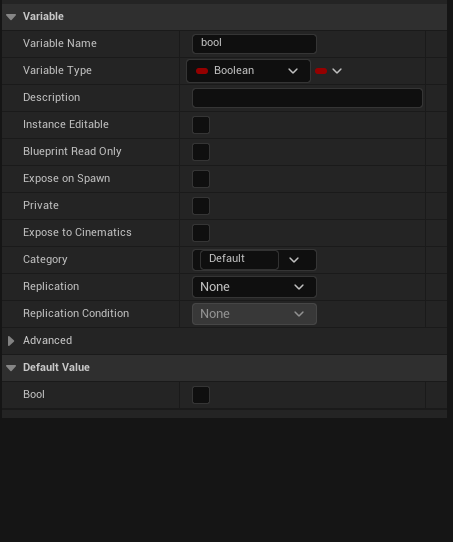
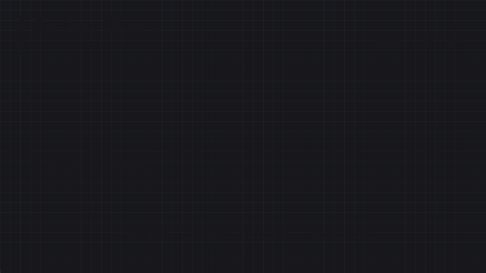

1 · Variables, types, cast & tags
Chaque type de variable Blueprint a sa couleur de pin, ses nœuds et ses pièges. Cette page les prend un par un — logique pour les booléens, maths pour les nombres, texte (avec conversions et parsing), espace 3D, références (avec le Cast) — puis termine par les tags, qui servent à étiqueter les Actors.
Créer et utiliser une variable
Panneau My Blueprint → Variables → +, puis choisir le type dans Details. L'icône à droite du type la transforme en Array, Set ou Map.
| Geste / option | Effet |
|---|---|
| Glisser la variable + Ctrl / Alt | crée directement un Get / un Set |
| Clic droit sur un pin → Promote to Variable | crée une variable du bon type à partir d'une sortie |
| Default Value | valeur de départ (après avoir compilé) |
| Instance Editable (œil) | modifiable par instance dans le niveau — chaque porte posée peut avoir son propre réglage |
| Expose on Spawn | apparaît comme entrée sur Spawn Actor from Class / Create Widget |
| Private, Category, Tooltip | cacher aux autres Blueprints, ranger, documenter |
| Variable locale | dans une fonction uniquement : n'existe que pendant l'appel |

Un fil ne se branche qu'entre pins compatibles. Quand deux types diffèrent mais se convertissent (Integer → Float, Float → String…), Unreal insère tout seul un nœud de conversion. Si le fil refuse de se brancher, c'est qu'il n'y a pas de conversion directe.
Boolean — logique
Pin rouge sombre. Vrai ou faux, false par défaut. Préfixe courant : bIsDead, bHasKey (convention Unreal).
| Nœud | Vrai quand… | C++ |
|---|---|---|
AND | toutes les entrées sont vraies | a && b |
OR | au moins une entrée est vraie | a || b |
NOT | l'entrée est fausse | !a |
XOR | une seule des deux est vraie | a != b |
NAND / NOR | inverse de AND / de OR | !(a && b) |
== / != | deux booléens égaux / différents |
Les nœuds de comparaison (>, <=, ==…) de tous les autres types produisent un Boolean, qu'on branche ensuite dans un Branch ou un Select. AND et OR acceptent plus de deux entrées (Add pin +).
Basculer un booléen : Set bLightOn ← NOT bLightOn (ou un Flip Flop). Pas de court-circuit : AND/OR évaluent toutes leurs entrées, contrairement au C++ — voir Décisions. Et plusieurs booléens qui s'excluent (bIsWalking, bIsRunning…) gagnent à devenir une énumération.
Byte
Pin bleu-vert foncé. Entier non signé de 0 à 255 (uint8). Rarement utilisé seul : c'est surtout le type de stockage des enums. Comme en C++, il fait le tour : 255 + 1 = 0, 0 - 1 = 255.
Integer — maths entières
Pin cyan / turquoise. Entier signé 32 bits (≈ ±2,1 milliards) ; Integer64 pour plus grand. Pour compter : munitions, vies, score, index de tableau.
| Nœud | Rôle | Exemple |
|---|---|---|
+ − × ÷ | opérations de base | 7 ÷ 2 = 3 — division entière, tronquée |
% (modulo) | reste de la division | 7 % 2 = 1 — pair/impair, boucler sur un index |
Increment Int / Decrement Int | +1 / −1 directement sur la variable (par référence) | Ammo-- |
Clamp (Integer) | borne entre Min et Max | vie entre 0 et 100 |
Min / Max / Abs | plus petit, plus grand, valeur absolue | |
Random Integer in Range | aléatoire entre Min et Max inclus | dé à 6 faces : 1 → 6 |
> < ≥ ≤ == != | comparaisons → Boolean |
Clic droit → Add Math Expression, puis taper une formule ((a + b) * 2 % c) : Unreal génère les entrées et les nœuds tout seul. Beaucoup plus lisible qu'une chaîne de dix nœuds + et ×.
Float — maths décimales
Pin vert pâle. Nombre à virgule — en Unreal 5, c'est en réalité un double (précision double). Pour tout ce qui est continu : vitesse, temps, distance, pourcentage.
| Nœud | Rôle |
|---|---|
+ − × ÷, Clamp, Min, Max, Abs | comme pour les entiers, mais 7 ÷ 2 = 3.5 |
Lerp | interpolation linéaire : A + (B − A) × Alpha — Alpha 0 → A, 1 → B (voir Timelines) |
FInterp To | rapproche une valeur d'une cible à chaque frame (avec Delta Time et une vitesse) — zoom, caméra, jauge qui descend en douceur |
Map Range Clamped | convertit une plage en une autre : vitesse 0–600 → volume 0–1 |
Nearly Equal | compare avec une tolérance — jamais == entre deux floats |
Truncate, Round, Floor, Ceil | vers Integer : tronquer, arrondir, arrondir en dessous / au-dessus |
Random Float in Range, Sin, Cos, Power, Sqrt | aléatoire, trigonométrie (degrés : Sin (Degrees)), puissance, racine |
Ajouter 5 à une position sur Event Tick va deux fois plus vite à 120 FPS qu'à 60. Multiplier par Delta Seconds (sortie de Event Tick, ou Get World Delta Seconds) : vitesse × Delta Seconds = une vitesse par seconde, identique sur toutes les machines.
String — manipuler du texte
Pin magenta. Texte brut et modifiable : le type « de travail » pour le débogage, les sauvegardes, construire ou découper du texte. Pas traduisible.
| Nœud | Rôle |
|---|---|
Print String | affiche à l'écran et dans le log — l'outil de débogage n°1 (accepte tout type via conversion auto) |
Append | colle plusieurs textes bout à bout (Add pin +) |
Len, Contains, Starts With, Find Substring | longueur, recherche |
Replace, To Upper / To Lower, Trim | transformer |
Split, Parse into Array, Get Substring | découper (ex. "12;5;40" → tableau) |
To String (…) / String to Int, String to Float | convertir depuis / vers les nombres |
== (option Ignore Case) | comparer deux Strings |
Passer d'un texte à un nombre et lire un texte structuré ("12;5;40") : voir Convertir et parser.
Name — identifiants
Pin violet. Un nom qui identifie quelque chose, pas un texte à lire. Unreal les stocke une seule fois dans une table interne : les comparer revient à comparer deux nombres, donc c'est très rapide.
| Utilisé pour | Exemple |
|---|---|
| sockets de squelette | hand_r pour attacher une arme |
| lignes de Data Table | Get Data Table Row → Row Name |
| niveaux | Open Level (by Name), Load Stream Level |
| tags | Actor Tags |
Hand_R et hand_r sont le même Name. Il n'y a pas de nœuds pour le découper ou le modifier : pour ça, convertir en String (To String), travailler, puis revenir (String to Name).
Text — ce que le joueur lit
Pin rose saumon. Tout texte affiché au joueur : UI, dialogues, noms d'objets, descriptions. C'est le seul des trois qui est traduisible (localisation) et qui formate les nombres selon la langue.
| Nœud | Rôle |
|---|---|
Format Text | modèle avec trous nommés : "{Name} a {Count} pièces" — l'ordre des mots peut changer selon la langue |
To Text (Integer) / To Text (Float) | nombre → texte, avec options (décimales min/max, séparateur de milliers) |
Set Text (widget Text) | afficher dans l'UI |
Equal (Text), Is Empty | comparer, tester |
| Besoin | Type |
|---|---|
| déboguer, construire, découper du texte | String |
| identifier (socket, ligne, niveau, tag) | Name |
| afficher au joueur | Text |
Convertir et parser
Convertir, c'est changer le type d'une valeur (un nombre en texte, un entier en décimal). Parser, c'est lire un texte pour en extraire des valeurs ("12;5;40" → trois nombres). Unreal convertit tout seul ce qui est sans risque (Integer → Float, n'importe quoi → String pour un Print String) et réclame un nœud explicite quand de l'information peut se perdre ou que le texte peut être invalide.
| De → vers | Nœud | À savoir |
|---|---|---|
| Integer → Float | automatique | sans perte pour les valeurs courantes |
| Float → Integer | Truncate, Round, Floor, Ceil | pas équivalents : pour −1,7, Truncate donne −1, Floor donne −2, Round −2 |
| nombre, Boolean, Vector… → String | To String (…) (ou un fil direct vers Print String) | pour le débogage et les clés techniques |
| nombre → Text | To Text (Integer) / To Text (Float) | options de décimales et de séparateur de milliers ; formaté selon la langue du joueur |
| String → Integer | String to Int | un texte non numérique donne 0, sans erreur |
| String → Float | String to Float | idem : 0.0 si le texte n'est pas un nombre |
| String ↔ Name | String to Name / To String (Name) | un Name est insensible à la casse (voir Name) |
| String ↔ Text | To Text (String) / To String (Text) | un Text ne se manipule pas : repasser par une String pour le découper |
| String → Vector | String to Vector | attend le format que produit To String : X=1.0 Y=2.0 Z=3.0 |
| Enum ↔ Byte | conversions de l'énumération | l'indice numérique de la valeur (0, 1, 2…) |
Parser un texte
String to Int avant d'être ajouté (Add) à un tableau d'entiers.| Nœud | Rôle |
|---|---|
Parse Into Array | coupe une String à chaque Delimiter (un ou plusieurs caractères) et renvoie un tableau ; Cull Empty Strings écarte les morceaux vides |
Split | coupe en deux au premier délimiteur (Left / Right ; Search from End part de la fin) — idéal pour une paire "Nom=Hache" |
Left, Right, Mid, Get Substring | extraire un morceau par sa position |
Find Substring | position d'un fragment (−1 s'il est absent) — à tester avant de découper |
Trim, Replace | nettoyer avant de convertir : espaces, retours à la ligne, séparateurs parasites |
Is Numeric | le texte est-il un nombre ? — le garde-fou à poser avant String to Int |
Join String Array | le chemin inverse : un tableau de String recollé avec un séparateur |
| Piège | Correction |
|---|---|
String to Int sur "abc" renvoie 0 — impossible de distinguer d'un vrai "0" | tester Is Numeric d'abord, et traiter le cas faux |
un retour à la ligne ou un espace traîne ("40\r", " 5") | Trim avant de convertir |
un nombre à virgule décimale ("3,5") | le point est le séparateur reconnu : remplacer la virgule, ou écrire les données avec un point |
parser ce qu'affiche un Text ("1 000,5") | jamais : le Text est formaté selon la langue. Garder la valeur numérique à côté, et parser des Strings techniques |
| un fichier entier à lire (dialogues, statistiques) | importer une Data Table (CSV / JSON) plutôt que de tout parser à la main |
Vector
Pin jaune / or. Trois floats X, Y, Z : une position (un point du monde) ou une direction (une flèche). En Unreal, X = avant, Y = droite, Z = haut, en centimètres. Vector 2D (X, Y) sert pour l'input et l'UI.
| Nœud | Rôle |
|---|---|
Get Actor Location / Set Actor Location | lire / placer un Actor |
+ / − | déplacer un point ; B − A = vecteur qui va de A vers B |
× float | allonger une direction : Forward Vector × 500 = 5 m devant |
Vector Length / Distance (Vector) | longueur d'un vecteur ; distance entre deux points |
Normalize | garde la direction, longueur ramenée à 1 |
Get Forward / Right / Up Vector | directions locales d'un Actor ou d'une rotation |
Dot Product | > 0 : même sens, 0 : perpendiculaire, < 0 : opposé — « l'ennemi est-il devant moi ? » |
Cross Product | vecteur perpendiculaire aux deux autres |
Break Vector / Make Vector, Split Struct Pin | accéder à X, Y, Z séparément |
Rotator
Pin bleu lavande. Une orientation en trois angles (degrés) : Roll (X, pencher sur le côté), Pitch (Y, lever/baisser le nez), Yaw (Z, tourner à gauche/droite).
| Nœud | Rôle |
|---|---|
Get Actor Rotation / Set Actor Rotation, Add Actor Local Rotation | lire, fixer, ajouter une rotation |
Find Look at Rotation | rotation pour regarder d'un point vers un autre (tourelle, PNJ qui suit du regard) |
RInterp To, Lerp (Rotator) | tourner en douceur — prend le chemin le plus court |
Combine Rotators, Delta (Rotator) | additionner deux rotations ; différence normalisée entre deux |
Get Forward Vector (depuis un Rotator) | direction dans laquelle pointe cette rotation |
Un Rotator a aussi trois nombres, mais ce sont des angles, dans l'ordre Roll/Pitch/Yaw. Pour passer de l'un à l'autre : Get Forward Vector (rotation → direction), Rotation From X Vector ou Make Rot from X (direction → rotation).
Transform
Pin orange. Le trio complet : Location (Vector) + Rotation + Scale (Vector, 1 = taille normale). C'est ce que demande Spawn Actor from Class.
| Nœud | Rôle |
|---|---|
Make Transform / Break Transform | assembler / séparer les trois composantes |
Get Actor Transform, Get World Transform (composant) | transform dans le monde |
Get Relative Transform | transform par rapport au parent (composant attaché) |
Transform Location / Inverse Transform Location | passer un point de l'espace local à l'espace monde, et inversement |
Un composant attaché (arme dans la main, lampe sur un casque) a une position relative à son parent. Set Relative Location le déplace par rapport au parent, Set World Location dans le monde. Ouvrir une porte = changer sa rotation relative, sinon elle ignore la rotation de son mur.
Object Reference
Pin bleu. Pas l'objet lui-même : une flèche vers un objet qui existe dans le jeu (un Actor, un composant, un widget). Vide par défaut (None).
| Obtenir une référence | Exemple |
|---|---|
| sortie d'un événement | Other Actor d'un overlap, Hit Actor d'un trace |
| nœuds « Get » | Get Player Character, Get Player Controller, Get Game Instance |
| valeur de retour | Spawn Actor from Class, Create Widget → Promote to Variable |
| variable Instance Editable | choisir l'Actor avec la pipette dans le niveau |
Utiliser une référence vide (Actor détruit, variable jamais remplie) donne l'erreur Accessed None trying to read property…. Protéger avec Is Valid (la version macro, avec pins d'exécution Is Valid / Is Not Valid). Pour accéder aux variables propres à BP_Character depuis une référence générique (Actor), il faut un Cast To BP_Character — ou une interface.
Cast To : changer le type d'une référence
Une référence « générique » (Actor, Pawn, Object) ne donne accès qu'à ce que sa classe connaît. Pour lire Health ou appeler une fonction définie dans BP_Enemy, il faut dire à Unreal : « cet Actor est en réalité un BP_Enemy ». C'est le rôle de Cast To BP_Enemy : il vérifie la classe réelle de l'objet à l'exécution et, si elle correspond, renvoie la même référence, retypée.
| Élément | Rôle |
|---|---|
| Entrée Object | la référence à tester (Other Actor, Get Player Pawn…). Une référence None fait échouer le cast, sans erreur |
Sortie d'exécution + As BP_Enemy | cast réussi : la référence retypée, avec toutes les variables et fonctions de la classe |
Cast Failed | cast raté : l'objet n'est pas de cette classe (ni d'une classe enfant) |
| Pure Cast (clic droit → Convert to Pure Cast) | supprime les pins d'exécution : renvoie la référence ou None. Compact, mais à faire suivre d'un Is Valid |
| Cast vers un parent | réussit pour tous les enfants : Cast To Character accepte BP_Hero et BP_Enemy ; Cast To Actor réussit toujours |
| Source de la référence | Cast typique |
|---|---|
Other Actor d'un overlap ou d'un hit | Cast To BP_Hero : est-ce le joueur ? |
Get Player Pawn / Get Player Character | Cast To BP_Hero pour lire ses variables propres |
Get Game Instance, Get Game Mode | Cast To BP_MyGameInstance / BP_MyGameMode — voir Game Instance |
Try Get Pawn Owner (Animation Blueprint) | Cast To BP_Hero, une fois, à l'initialisation |
Load Game from Slot | Cast To BP_SaveGame — voir SaveGame |
Un nœud Cast To BP_Enemy fait référence à la classe BP_Enemy : charger le Blueprint qui l'appelle charge aussi BP_Enemy — avec ses meshes, ses sons, ses propres casts. Des casts vers des Blueprints lourds, répétés partout, font tout charger d'un coup. Pour voir les dépendances d'un asset : clic droit → Reference Viewer et Size Map. Pour les réduire : caster vers une classe parente légère (Character, ou un BP_EnemyBase sans assets), passer par une interface, ou s'abonner à un Event Dispatcher.
Un cast raté est normal (un overlap avec n'importe quoi déclenche un cast raté) : brancher Cast Failed sur rien suffit pour ignorer. En revanche, caster sur Event Tick refait la vérification à chaque frame pour rien : faire le cast une fois (BeginPlay, Event Possessed), puis garder le résultat dans une variable typée.
| Besoin | Outil |
|---|---|
| accéder aux variables propres d'une classe précise | Cast To |
| demander la même action à des classes sans parent commun | Blueprint Interface (Does Implement Interface) |
| savoir « est-ce un ennemi ? » sans charger sa classe | tag (Actor Has Tag) |
| prévenir sans connaître les destinataires | Event Dispatcher |
Class Reference & Soft Reference
| Type | Pin | Pointe vers | Sert à |
|---|---|---|---|
| Object Reference | bleu | un objet existant | lire/modifier cet objet |
| Class Reference | violet | un plan (BP_Enemy), pas une instance | Spawn Actor from Class, Create Widget, Get All Actors of Class |
| Soft Object / Soft Class | bleu / violet clair | un asset pas forcément chargé | charger à la demande (Async Load Asset) — gros assets, skins, niveaux |
Une référence normale (hard) charge l'asset pointé en même temps que le Blueprint qui la contient — cent variables vers cent armes = cent armes en mémoire. Une soft reference ne stocke qu'un chemin : l'asset n'est chargé que quand on le demande.
Actor Tags & Component Tags
Un tag est une étiquette (un Name) posée sur un Actor ou un composant, pour le reconnaître sans connaître sa classe : Player, Enemy, Interactable, Flammable. Chaque Actor a un tableau Tags (Details → Actor → Tags), chaque composant aussi (Component Tags).

Component Has Tag), puis lequel choisir entre Actor Tags, Component Tags et Gameplay Tags.| Nœud | Rôle |
|---|---|
Actor Has Tag | l'Actor porte-t-il ce tag ? — typique après un overlap : « est-ce un ennemi ? » |
Component Has Tag | même chose sur un composant (ex. distinguer la hitbox de la tête) |
Get All Actors with Tag | tous les Actors du niveau portant ce tag (tous les points de spawn) |
Get Components by Tag | les composants d'un Actor portant ce tag |
Tags (variable Array) | ajouter/retirer à l'exécution : Add / Remove sur le tableau |
Get All Actors with Tag parcourt tout le niveau : à faire une fois (au BeginPlay, stocker le résultat), jamais sur Event Tick. Et un tag est un simple texte tapé à la main : Enemy, enemy et Ennemy ne se protègent pas des fautes de frappe (Name est insensible à la casse, mais pas à l'orthographe).
Gameplay Tags
Les Gameplay Tags sont la version robuste : des tags hiérarchiques déclarés une seule fois dans Project Settings → GameplayTags, puis choisis dans une liste (plus de fautes de frappe). Ils s'écrivent avec des points : Status.Debuff.Poison, Weapon.Type.Sword, Ability.Dash.
| Type / nœud | Rôle |
|---|---|
Gameplay Tag | un seul tag (variable) |
Gameplay Tag Container | un ensemble de tags — l'état complet d'un personnage |
Has Tag | le conteneur contient-il ce tag ? (option Exact Match) |
Has Any / Has All | au moins un / tous les tags d'un autre conteneur |
Matches Tag | compare deux tags en tenant compte de la hiérarchie |
Add Gameplay Tag / Remove Gameplay Tag from Container | modifier l'état |
Un personnage qui porte Status.Debuff.Poison répond vrai à « a-t-il Status.Debuff ? » (sans Exact Match). Une potion « purifie tous les debuffs » teste donc le parent, sans connaître la liste des poisons, brûlures et gels qui existeront plus tard. C'est la base du Gameplay Ability System d'Unreal.
| Actor / Component Tags | Gameplay Tags | |
|---|---|---|
| Type | Name libre | tag déclaré dans le projet |
| Fautes de frappe | possibles | impossibles (choix dans une liste) |
| Hiérarchie | non | oui (A.B.C correspond à A.B) |
| Bon pour | marquer vite un Actor dans le niveau | états, capacités, types de dégâts — tout ce qui grossit avec le projet |